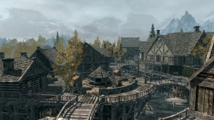

As theives, cities are crucial to our success. While it is habit of ours to apporach every building, person, or wagon looking for treasure to steal, if we only relied upon what we stumbled upon in the wilderness, we'd all be left empty handed. With concentrated amounts of people, comes concentrated about of gold to make, or should I stay steal?

Rften, being the hometown of the Theives Guild, should be a major checkpoint on your list. Wether you're actually a part of the guild or not, this town will become a valuable resource for you. With Tonilia as you resident fence, and Maven Black-Briar at your back, you may as well assume you're invincible while in this shady-I mean charming-town.
In terms of stealing oppotunities, Whiterun is not a poor choice to ake up residence for a little while. It is, after all, it is the tading capital of Skyrim. And with Dragonsreach perched at the top of that hill, with Jorrvaskor just to the side, you could get a preety good run for your money in this town.
Be sure to stay dry as you sneak through this stair filled city. It's filled to the brim with Dwarven artifacts, which may not be worth much on their own, but when added together, expect a pretty sum. Although theres such places as the treasury house to get a few items to you liking, many theives wonder if it's worth it to ssteal here, as a stint in Cidna Mine is sure to make anyone crazy.